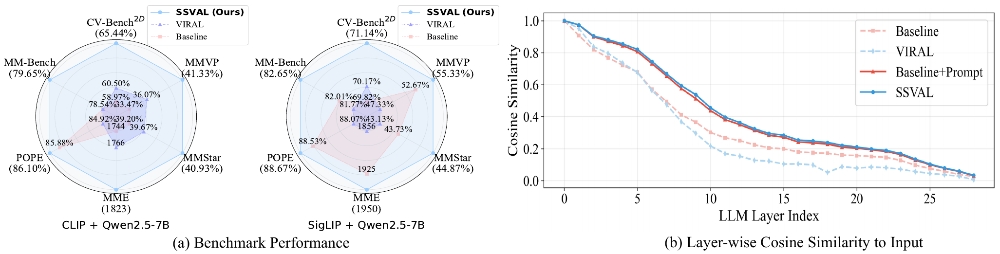
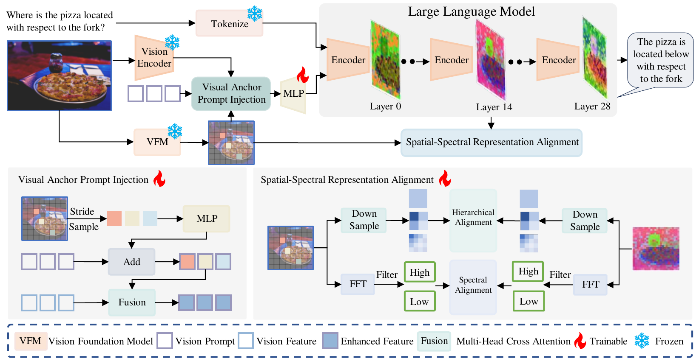
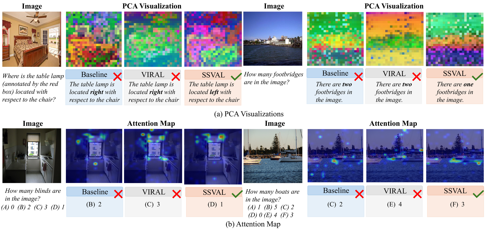
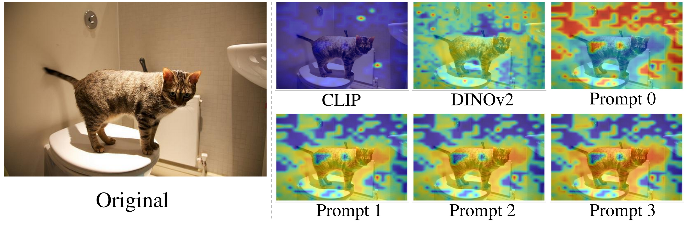

Prompts absorb complementary VFM knowledge through gated cross-attention, then remain as lightweight visual anchors at inference.
SSVAL
Mitigating Visual Degradation in MLLMs via Spatial-Spectral Visual Anchor Learning
1 China University of Petroleum (East China)
2 Shanghai Jiao Tong University
3 Wuhan University
4 Great Wall Motor
5 Nanyang Technological University
6 The University of Hong Kong
* Corresponding authors
How can an MLLM retain rich visual evidence as representations propagate through deeper language layers?
SSVAL learns visual anchors that stay with the model during inference. Prompts absorb complementary knowledge from external vision foundation models during training, while spatial and frequency-domain objectives provide targeted supervision to intermediate layers. The result is stronger visual perception without carrying the external VFM into deployment.

Abstract
Despite the progress of multimodal large language models, deficiencies in visual perception remain. Following visual instruction tuning, internal MLLM representations rapidly deviate from their original semantic states during inference, causing severe information degradation. Direct alignment with external vision foundation models enriches visual semantics, but does not mitigate this representation deviation.
We introduce Spatial-Spectral Visual Anchor Learning (SSVAL). Its core module, Visual Anchor Prompt Injection, learns prompts that absorb rich visual knowledge during training and serve as stable anchors during inference. Auxiliary spatial and frequency-domain alignment losses provide complementary supervision at intermediate LLM layers. Across multiple benchmarks, vision encoders and model scales, SSVAL consistently improves visual understanding with negligible inference overhead.
Model Architecture

Anchors at inference, complementary supervision at training.
Multi-scale spatial alignment preserves both fine-grained details and global structure across intermediate layers.
Frequency-domain alignment reinforces global semantics while retaining complementary high-frequency cues.
Experiment Results
SSVAL achieves consistent gains with negligible inference cost. The training-only alignment objectives add no deployment overhead, while the retained visual anchors require only a marginal increase in parameters and computation.
+6.47%CV-Bench 2D
+7.86%MMVP
+1.55%Inference parameters
+0.04%Inference FLOPs
| Method | Vision Encoder | LLM | CV-Bench2D | MMVP | MMStar | MME | POPE | MM-Bench |
|---|---|---|---|---|---|---|---|---|
| Baseline | CLIP | Qwen2.5-3B | 51.53% | 28.00% | 36.40% | 1579.16 | 86.97% | 74.59% |
| VIRAL | 52.85% +1.32 | 32.00% +4.00 | 37.07% +0.67 | 1531.05 -48.11 | 84.97% -2.00 | 75.38% +0.79 | ||
| SSVAL | 54.80% +3.27 | 33.33% +5.33 | 38.93% +2.53 | 1613.94 +34.78 | 86.60% -0.37 | 77.41% +2.82 | ||
| Baseline | CLIP | Qwen2.5-7B | 58.97% | 33.47% | 39.20% | 1743.56 | 85.88% | 78.54% |
| VIRAL | 60.50% +1.53 | 36.07% +2.60 | 39.67% +0.47 | 1765.65 +22.09 | 84.92% -0.96 | 78.54% +0.00 | ||
| SSVAL | 65.44% +6.47 | 41.33% +7.86 | 40.93% +1.73 | 1822.72 +79.16 | 86.10% +0.22 | 79.65% +1.11 | ||
| Baseline | SigLIP2 | Qwen2.5-7B | 69.82% | 52.67% | 43.73% | 1924.64 | 88.53% | 82.01% |
| VIRAL | 70.17% +0.35 | 47.33% -5.34 | 43.13% -0.60 | 1856.21 -68.43 | 88.07% -0.46 | 81.77% -0.24 | ||
| SSVAL | 71.14% +1.32 | 55.33% +2.66 | 44.87% +1.14 | 1950.21 +25.57 | 88.67% +0.14 | 82.65% +0.64 |

